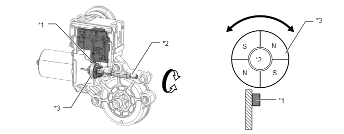
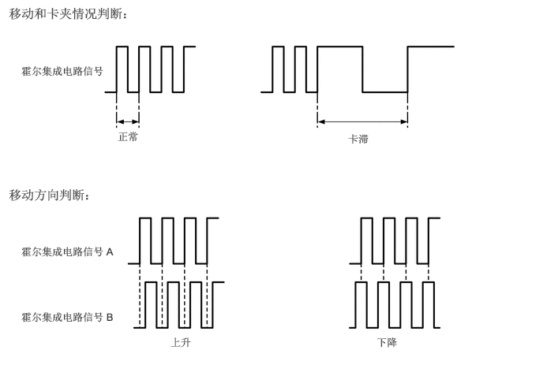

系统控制
电动车窗控制系统具有下列功能：
| 功能 | 概要 |
|---|---|
|
*：使用定制车身电气系统可更改功能设定。 |
|
| 电动上升和下降 | 部分拉起或部分推下多路网络主开关总成、电动车窗升降器开关总成或后电动车窗升降器开关总成时，该功能可使车窗打开或关闭。松开开关，车窗立即停止。 |
| 单触式自动升降 | 只要一触摸多路网络主开关总成、电动车窗升降器开关总成或后电动车窗升降器开关总成，单触式自动升降功能即可使车窗全开或全关。 |
| 防夹 | 单触式自动上升操作或电动上升操作期间，如果异物夹在车窗中，则防夹功能自动停止电动车窗并向下移动车窗。 |
| 防卡 | 单触式自动下降操作或电动下降操作期间，如果有异物夹在车窗中，则防夹功能自动停止电动车窗。 |
| 遥控 | 多路网络主开关总成可控制车窗的升降操作。 |
| 车窗锁止 | ·
车窗锁止开关打开时，禁止使用各电动车窗升降器开关总成操作 3 个乘客车窗。 ·
即使车窗锁止开关打开，使用多路网络主开关总成也可操作 3 个乘客车窗。 |
| 钥匙关闭操作 | ·
如果任一前门未打开，则将点火开关置于 OFF 位置后，可使电动车窗操作约 45 秒。 ·
如果车窗锁止开关关闭，可使用电动车窗升降器开关总成或任一后电动车窗升降器开关总成操作车窗。如果车窗锁止开关打开，则仅可使用多路网络主开关总成操作车窗。 |
| 钥匙联动升降* | 电子钥匙发射器分总成未在车内检测区域时，驾驶员车门锁止且驾驶员车门内的机械钥匙转动至锁止位置并保持 1.5 秒或更长时间，主车身 ECU（多路网络车身 ECU）激活电动车窗电动机以在转动机械钥匙时升起所有门窗。同样，驾驶员车门解锁时，将驾驶员车门锁芯转至解锁方向并保持 1.5 秒或更长时间，将使所有门窗下降。 |
| 发射器联动下降* | 认证 ECU（智能钥匙 ECU 总成）接收到来自发射器的解锁信号超过 3 秒时，主车身 ECU（多路网络车身 ECU）根据信号控制电动车窗电动机以打开车窗。同样，认证 ECU（智能钥匙 ECU 总成）接收到来自发射器的锁止信号超过 3 秒时，主车身 ECU（多路网络车身 ECU）根据信号控制其电动车窗电动机以关闭车窗。 |
| 电动车窗玻璃打开警告 | 在电动车窗玻璃打开的情况下，如果将点火开关从 ON 切换至 OFF 位置且驾驶员车门打开，则组合仪表总成中的多功能蜂鸣器鸣响一次。然后，多信息显示屏上出现警告信息且主警告灯闪烁。 |
| 定制 | 可使用 Techstream 进行某些功能的 ON 或 OFF 设定。有关详情，请参考修理手册。 |
内置于各电动车窗电动机的 ECU 存储其门窗玻璃初始位置。即使断开端子、保险丝或电动车窗电动机连接器的连接，也不会清除初始位置。但在拆下或重新安装车窗零部件、或更换电动车窗升降器开关总成或电动车窗升降器电动机总成后，必须清除存储的初始位置数据和/或必须执行初始化。有关详情，请参考修理手册。
防夹功能
单触式自动上升操作和电动上升操作期间，如果有异物夹在车窗玻璃中，则防夹功能将使电动车窗自动停止并使其向下移动。
防夹功能的工作情况如下所述：
| 操作 | 功能 |
|---|---|
| 自动上升操作期间（除遥控操作外） | 向下操作 135 mm (5.3 in.) 或 2.5 秒 |
| 手动上升操作期间 | 向下操作 25 mm (1.0 in.) 或 2.5 秒 |
防卡功能
单触式自动下降操作和电动下降操作期间，如果有异物夹在门窗中，则防夹功能自动使电动车窗停止。
电动车窗升降器电动机总成
电动车窗升降器电动机总成内的磁铁和霍尔集成电路用于启用电动车窗防夹功能。

| *1 | 霍尔集成电路 | *2 | 蜗杆 |
| *3 | 磁铁 | - | - |
霍尔集成电路将磁铁旋转时产生的磁通量变化转换成脉冲信号，并将其输出至内置于电动车窗升降器电动机总成内的电动车窗 ECU。
为控制防夹功能，ECU 根据来自霍尔集成电路的脉冲信号 A 来确定门窗玻璃的移动量和卡滞程度，并根据来自霍尔集成电路信号 A 和 B 的脉冲之间的相位差来判断车窗玻璃的移动方向。

失效保护
如果电动车窗电动机内的霍尔集成电路出现故障，则失效保护模式将禁用电动车窗的某些功能：
仅在完全按下或拉起相应电动车窗升降器开关并保持在该位置时，各电动车窗运行。
任一电动车窗 ECU 检测到霍尔集成电路（检测车窗的位置、速度和方向）故障时，其将切换至失效保护模式：
诊断
如果电动车窗 ECU 检测到电动车窗控制系统出现故障，则在存储器中存储诊断故障码 (DTC)。
采用 Global TechStream (GTS) 可读取 DTC。有关详情，请参考修理手册。